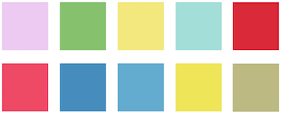
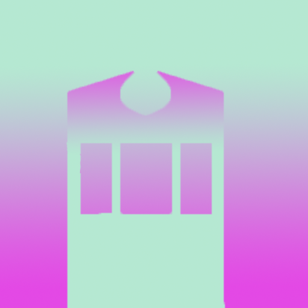
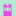
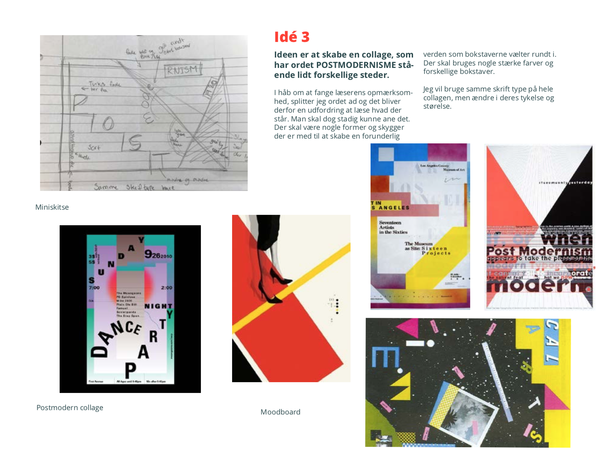
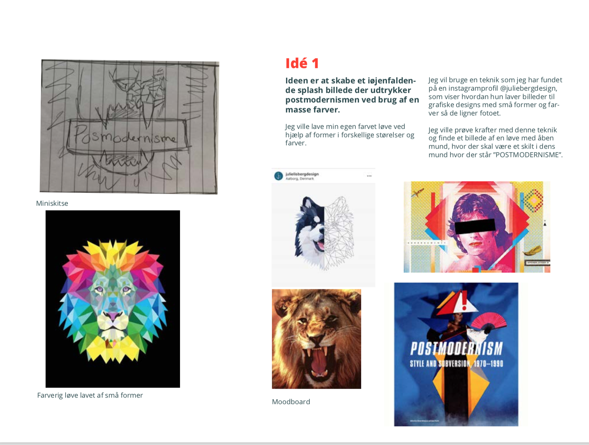
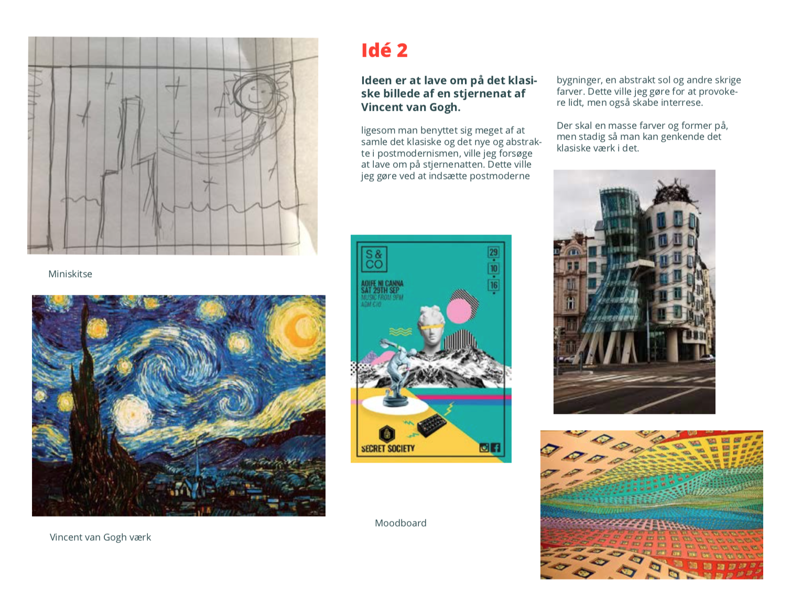
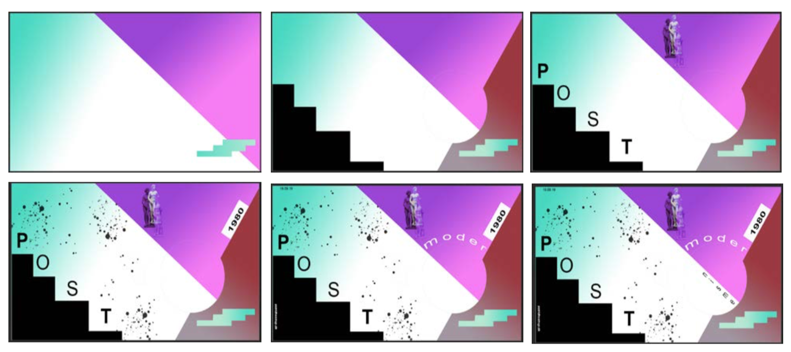
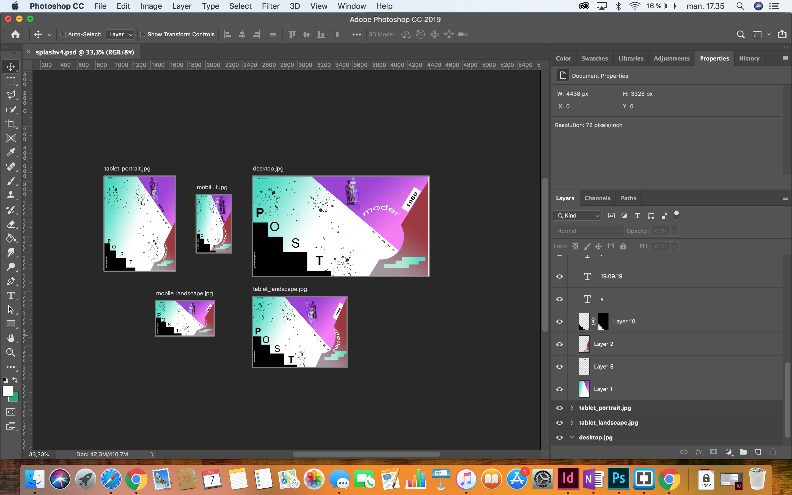

Mit første tema på KEA multimediedesign handlede om at udarbejde et responsivt website ud fra en bestemt stilart. Vi skulle ud fra vores moodborads, layoutdiagrammer, og skitser i InDesign, kode vores ejet website. Min stil art var postmodernisme. Vi blev i dette tema for første gang præsenteret for HTML og CSS, som var det vi skulle bruge til at kode vores stilartsite. Vi blev også introduceret for flexbox, logotype, responsivt splashbilled, media querys, google fonts og Fav-inconer. Rent designmæssigt lærte vi at bruge InDesign som værktæj til at lave en skabelon til vores hjemmeside, vi lærte om farvelære og tegnede vores egene Faviconer i forskellige størelser